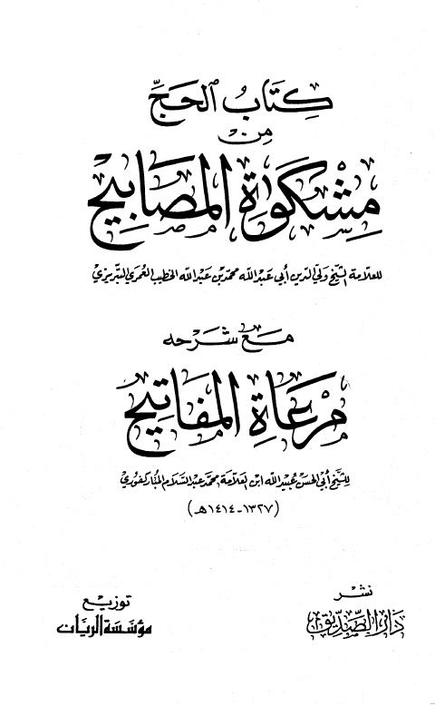

Downloads need an internet connection.
كتاب الحج من مشكاة المصابيح مع شرحه مرعاة المفاتيح
Authors: عبيد الله بن عبد السلام المباركفوري
Publishers: مؤسسة الريان دار الصديق ببيروت
**▫️ العنوان: كتاب الحج من مشكاة المصابيح مع شرحه مرعاة المفاتيح** ▪️ المؤلف: #عبيد_الله_بن_عبد_السلام_المباركفوري ▫️ الناشر: #دار_الصديق • #مؤسسة_الريان ▪️ بلد النشر: بيروت، #لبنان ▫️ الطبعة: 1 ▪️ عدد الأجزاء: 2 ▫️ الصفحات: 874 ▪️ نوع الوعاء: #كتاب ▫️ التصنيف الرئيسي: #الحديث_وعلومه ▪️ التصنيف الفرعي: #باقي_مجموعات_الحديث ۪